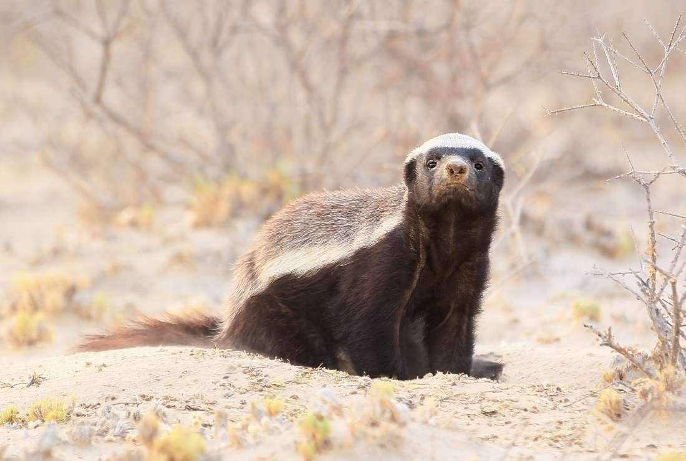

The Honey Badger
11 Fierce Facts About the Honey Badger You’ve probably heard all kinds of things about the honey badger and wondered, “Are these claims substantiated?” (First and foremost: Is it true that honey badgers don’t care?) Here are a few things we know for sure.
THEIR NAME MEANS “HONEY EATER OF THE CAPE.”
1. Mellivora capensis is the species’ formal name, but you can go ahead and judge a honey badger by its common name. These little monsters love the sweet stuff. “The Cape” is The Cape of Good Hope, South Africa, where many reside (they also call the Middle East and India home). Another one of their names is ratel, which is an Afrikaans word that might be derived from the Dutch word for honeycomb, raat.THEY’RE SKUNK-LIKE.
2. Aside from their physical similarities, the honey badger also boasts a dangerous gland at the base of its tail containing a stinky liquid. Generally, it’s just used to mark territory, but should the animal find itself in distress, its biological kneejerk is to release a stink bomb—different, but just as rotten as its sister scent-leaver.THEY CAN DIG LIKE CRAZY.
3. Using their long claws, honey badgers dig burrows to rest in, sometimes on a daily basis. They’ll do it anywhere—in the ground, in a tree trunk, or even into an old termite mound. If needed, they can dig themselves a hiding hole in a matter of minutes and use their natural excavation skills to capture prey underground.BUT THEY’RE LAZY ABOUT HOUSEKEEPING.
4. If a honey badger isn’t in the mood to make its own bed, it’s not shy about making itself at home in someone else’s residence. The creatures have been known to get comfortable in the dens of aardvarks or in the tunnels of foxes, mongooses, or springhares. (Really any crevice or hole will do for the honey badger.) They’re really good at adapting: The animals are usually diurnal in winter, but where they need to avoid humans, they’re usually nocturnal.THEY’RE MEAN.
5. It’s true that the honey badger has the Guinness Book of World Records title of "World's Most Fearless Creature," but they’re more than just audacious: they’re downright mean. They’re invasive and eager to pick a fight—even with a porcupine. But that doesn’t mean they’re invincible. Hyenas, lions, leopards and pythons are all foes (as are humans), but if those are considered your only enemies, you’re probably incredibly tough.THEY’LL EAT ANYTHING.
6. Seriously, anything and everything. They’re omnivores who will go after mammals, birds, reptiles, insects, larvae, plants, fruit, eggs, and roots.THEY’RE THICK-SKINNED.
7. Literally. There are reports of arrows and spears glancing off their thick, rubbery epidermis, which is also loose enough that, should a honey badger get caught in the mouth of a predator, it can writhe around and break loose. (A second option is to retaliate using its crazy powerful teeth—see number 8.) The honey badger may even have a resistance to snake venom and is sometimes able to sleep off a bite. (Their thick skin comes in handy in this way, too.) Snakes compose a quarter of their diets.THEIR TEETH ARE CRAZY POWERFUL.
8. They can chomp down with enough force to break the shell of a tortoise.THEY DON'T ACTUALLY PARTNER UP WITH BIRDS TO FIND FOOD.
9. You might have heard that honey badgers and honeyguide birds have a good partnership going. The honeyguide leads the badger to the hive and then eats up after the honey badger destroys it. Well, after over 200 years of study, we can pretty definitively say that honey badgers don’t care. This behavior has never been reliably seen in the wild, and even playing honeyguide songs elicits no response.THEY’RE SOLITARY WEASELS.
10. Honey badgers are in the same family as weasels, and just like those prickly beasts, honey badgers are pretty solitary. They keep to themselves and definitely stay out of the public eye, usually only banding together to mate. Babies are the exception: Young kits often stick with their mothers for so long that they can outgrow her.THEY’RE SMART.
11. Ferocious, fearless, and pugnacious animals aren’t always the smartest, but honey badgers break the mold. They’re so intelligent that they even use tools: Video from Moholoholo Wildlife Rehabilitation Center in South Africa revealed that a team of honey badgers used sticks, a rake, mud, stones, and pure determination in their attempts to escape. You can watch this, and all of Honey Badgers: Masters of Mayhem, on YouTube. If the Planet of the Apes franchise ever loses steam, it seems like we might have another animal to suggest for a spinoff.